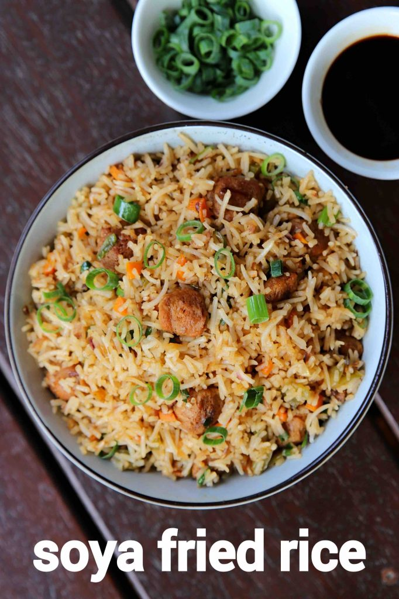

Back to homepage
Soya fried rice

Description
Fried rice recipe is one of the most popular rice items in india, if not in most of the countries. it is generally made with a choice of vegetables and meat with long grain rice. yet there are many variations to it, with some additional toppings in it and soya fried rice recipe is one such popular variation.
Ingredients
for frying soya:
- 3 cup water (for boiling)
- tsp salt (for boiling)
- 1/2 cup soya chunks
- 1/2 tsp ginger garlic paste
- 1/2 tsp kashmiri red chilli powder
- 1/2 tsp salt
- 1/2 tsp oil
for fried rice:
- 2 tbsp oil
- 2 clove garlic (finely chopped)
- 1 chilli (split)
- 4 tbsp spring onion (chopped)
- 1/2 onion (finely chopped)
- 1/2 carrot (finely chopped)
- 2 tbsp cabbage (finely chopped)
- 1/2 capsicum (finely chopped)
- 1 tsp chilli sauce
- 2 tbsp vinegar
- 2 tbsp soy sauce
- 1/2 tsp pepper powder
- 1 tsp salt
- 2 cup cooked rice
Steps
- firstly, in a saucepan boil 3 cup water and ½ tsp salt.
- add ½ cup soya chunks and boil for 5 minutes.
- drain off and squeeze soya slightly.
- take the squeezed soya into a small bowl.
- also, add ½ tsp ginger garlic paste, ½ tsp chilli powder and ¼ tsp salt.
- mix well and marinate for 30 minutes.
- now in a wok heat 2 tbsp oil and in marinated soya.
- fry for 3 minutes making sure it turns crisp and cooked well.
- keep the fried soya aside.
- in the same wok heat 2 tbsp oil and stir fry 2 clove garlic, 1 chilli and 2 tbsp spring onion.
- also, saute ½ onion on high flame.
- further, add ½ carrot, 2 tbsp cabbage and ½ capsicum.
- stir fry on high flame without overcooking vegetables.
- now add 1 tsp chilli sauce, 2 tbsp vinegar, 2 tbsp soy sauce, ½ tsp pepper powder and ½ tsp salt.
- stir fry making sure all the spices are well combined.
- further, add fried soya and stir fry coating sauce uniformly.
- now add 2 cup cooked rice and ½ tsp salt.
- stir fry making sure all the sauce is well combined.
- finally, add 2 tbsp spring onion and enjoy soya fried rice with gobi manchurian.